Scientific ggplot2 graphics for nonparametric regression
agri_np_plot.RdReturns editable ggplot2 objects displaying observed agronomic data with fitted smooths, residuals, derivatives, response surfaces and integer decision summaries.
Usage
agri_np_plot(
object,
type = c("fit", "residuals", "derivative", "surface",
"qq", "scale_location", "order", "efficiency", "difference",
"levels", "forest"),
predictor = NULL,
n = 200L,
fixed = list(),
interval = FALSE,
group = NULL,
surface_predictors = NULL,
bootstrap = NULL,
seed = 1,
palette = c("color", "grey"),
x_unit = NULL,
y_unit = NULL,
...,
jitter = FALSE
)Arguments
- object
An
agri_np_reg_fit.- type
Fitted response, residuals, derivative, response surface, the three classical residual diagnostics
"qq","scale_location"and"order", for integer-support fits"efficiency"and"difference","levels"for the level summary drawn fromagri_np_levels, or"forest"for the coefficient forest plot drawn byagri_np_forest.- predictor
Numeric focal predictor.
- n
Grid size.
- fixed
Values for other covariates.
- interval
Request analytic confidence ribbon when supported.
- group
Optional grouping variable for separate fitted curves. When a resampling band is requested, one band is drawn per level of the grouping variable.
- surface_predictors
Two numeric predictors used for a response-surface plot.
- bootstrap
Adds a resampling band. Pass an
agri_np_bootstrapobject to reuse one already computed, which is the reproducible route, orTRUEto run one on the spot. Withtype = "forest"ortype = "levels"it is passed toagri_np_forestoragri_np_levels.- seed
Seed used when a resampling band must be computed on the spot.
- palette
Discrete colour palette:
"color"uses the colour-blind-safe Okabe-Ito palette;"grey"uses grey tones safe for black-and-white print. Applied whengroupis supplied.- x_unit, y_unit
Plain-text unit string appended in parentheses to the default axis labels, e.g.
"kg ha^-1"or"kg/ha".- jitter
If
TRUE, spreads overlapping observed values vertically in the fitted-response figure.- ...
Passed to the specialized drawing function (
agri_np_forestoragri_np_levels).
Details
For an integer-support fit the fitted response is drawn as steps and crosses rather than as a continuous line, because the model makes no statement about a value between two admissible decisions.
The residual diagnostics are descriptive. The package never selects an inferential method from a normality diagnostic.
Examples
data(agri_dose)
f <- agri_np_regression(yield ~ dose, agri_dose, method = "smoothing_spline")
# Example 1: fitted response. The result is a ggplot, so units belong in labs().
agri_np_plot(f, type = "fit") +
ggplot2::labs(x = expression("Nitrogen rate (kg ha"^-1*")"),
y = expression("Yield (Mg ha"^-1*")"))
 # Example 2: residuals against the fitted values
agri_np_plot(f, type = "residuals")
# Example 2: residuals against the fitted values
agri_np_plot(f, type = "residuals")
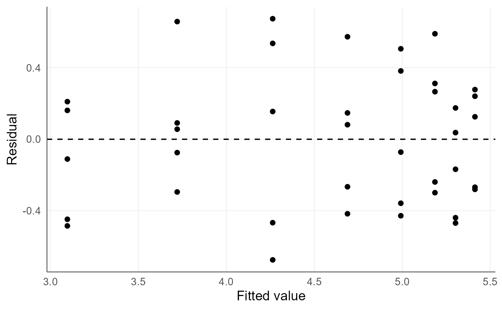
# Example 3: derivative, the agronomic return per extra unit of nitrogen
agri_np_plot(f, type = "derivative") +
ggplot2::labs(x = expression("Nitrogen rate (kg ha"^-1*")"),
y = expression("Marginal yield (Mg ha"^-1*" per kg ha"^-1*")")) +
ggplot2::geom_hline(yintercept = 0, linetype = 2)
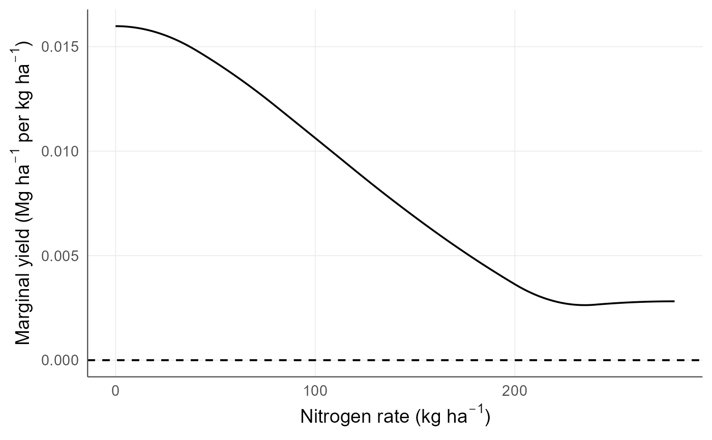
# Where the derivative crosses zero the response stops paying.
# Example 4: response surface over two interacting gradients
data(agri_surface)
if (requireNamespace("mgcv", quietly = TRUE)) {
fs <- agri_np_regression(yield ~ nitrogen + water, agri_surface,
method = "gam", gam_structure = "tensor")
agri_np_plot(fs, type = "surface",
surface_predictors = c("nitrogen", "water"), n = 35) +
ggplot2::labs(x = expression("Nitrogen rate (kg ha"^-1*")"),
y = "Irrigation depth (fraction of ETc)")
}
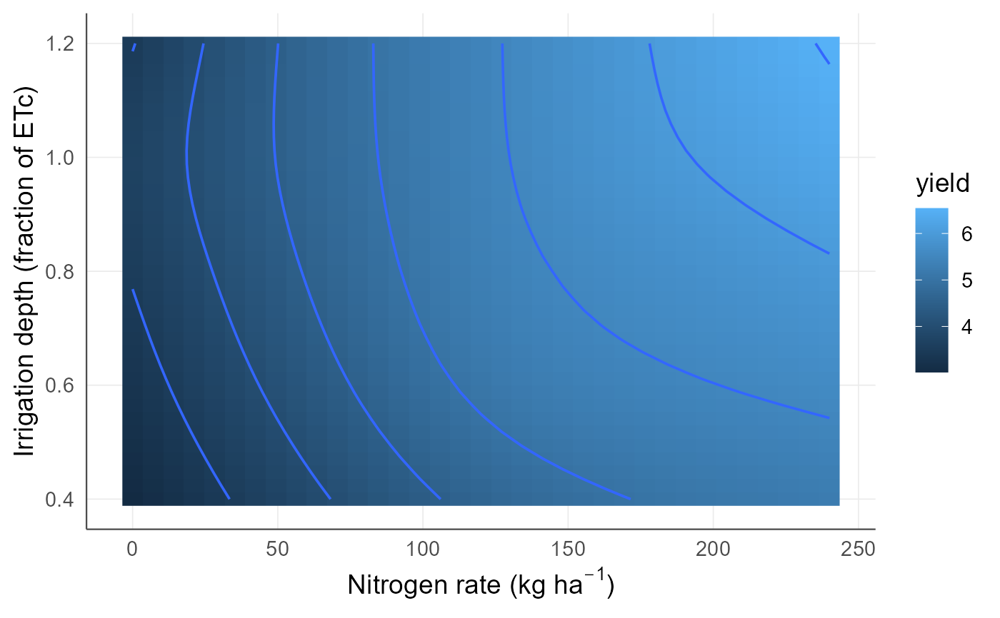
# Example 5: residual diagnostics, all descriptive
agri_np_plot(f, type = "qq")
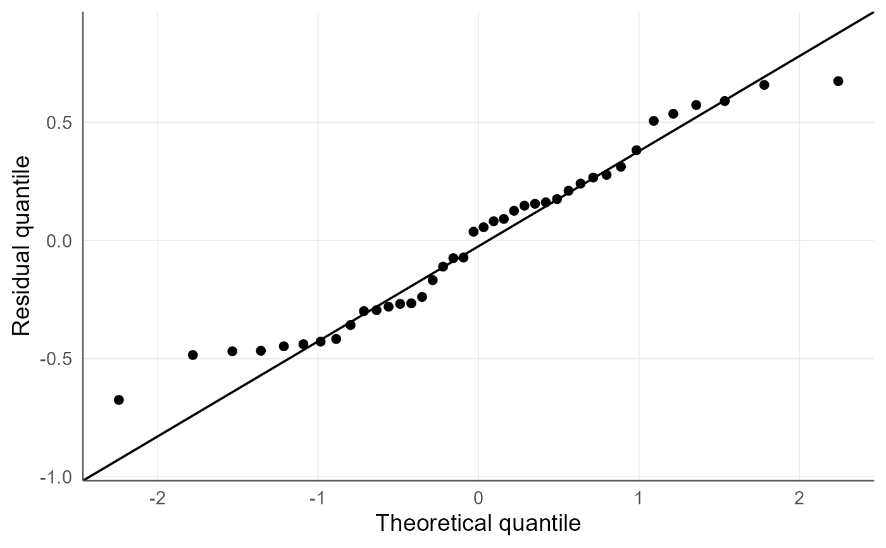
agri_np_plot(f, type = "scale_location")
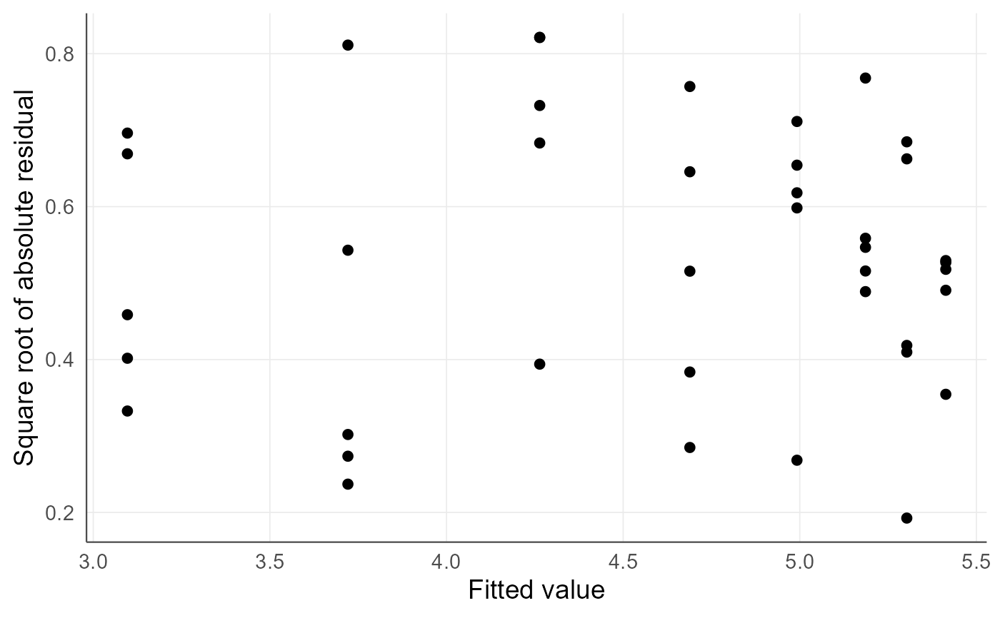
agri_np_plot(f, type = "order")
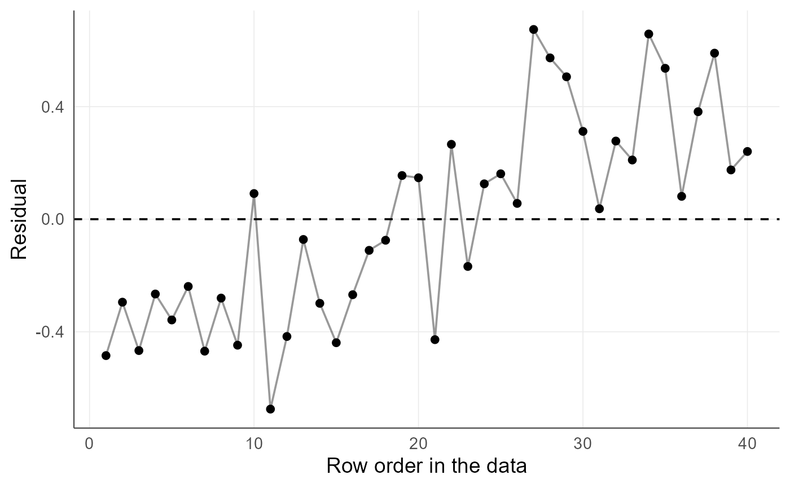
# Example 6: a resampling band for an engine with no analytic interval
b <- agri_np_bootstrap(f, B = 19, n = 25, seed = 1) # use B >= 999 in analysis
agri_np_plot(f, bootstrap = b)
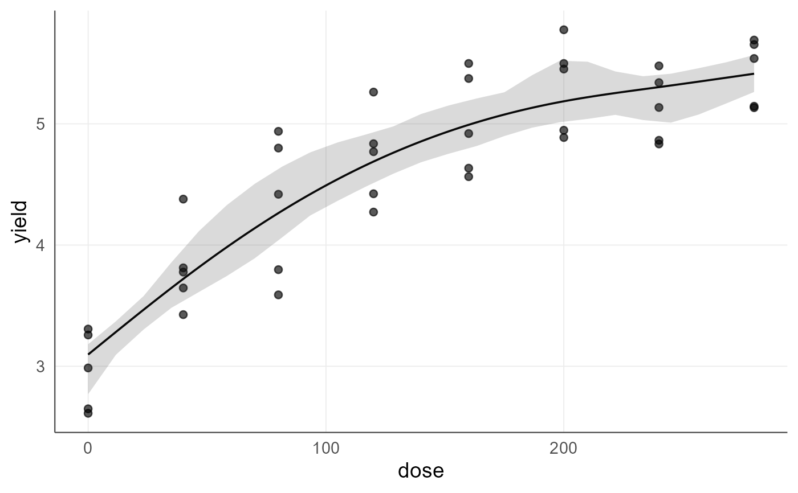
# Example 7: integer decisions. The fitted response is a step function and the
# two decision figures summarize the choice.
data(agri_density)
fi <- agri_np_regression(yield ~ plants, agri_density, method = "integer_grid",
integer_base_method = "smoothing_spline",
predictor_support = "observed_integer")
agri_np_plot(fi, type = "fit")
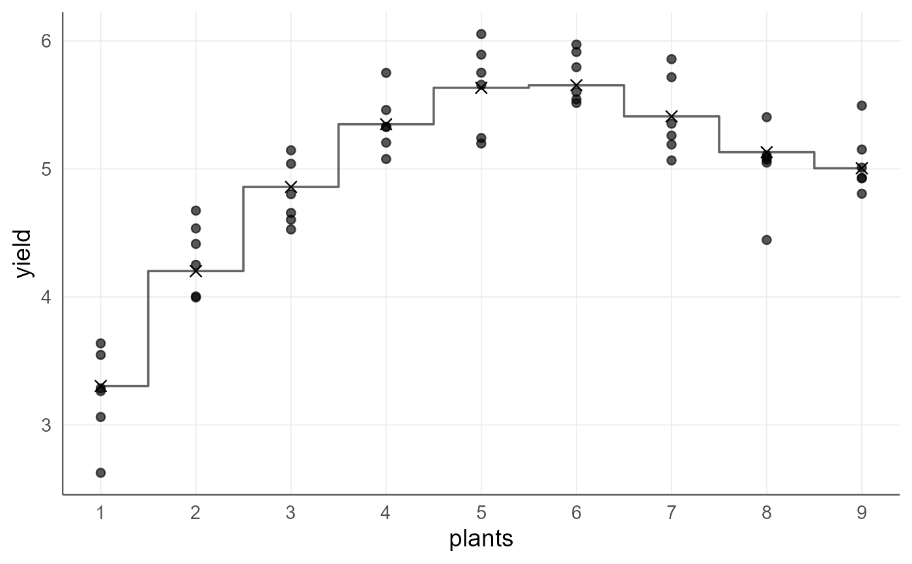
agri_np_plot(fi, type = "efficiency")
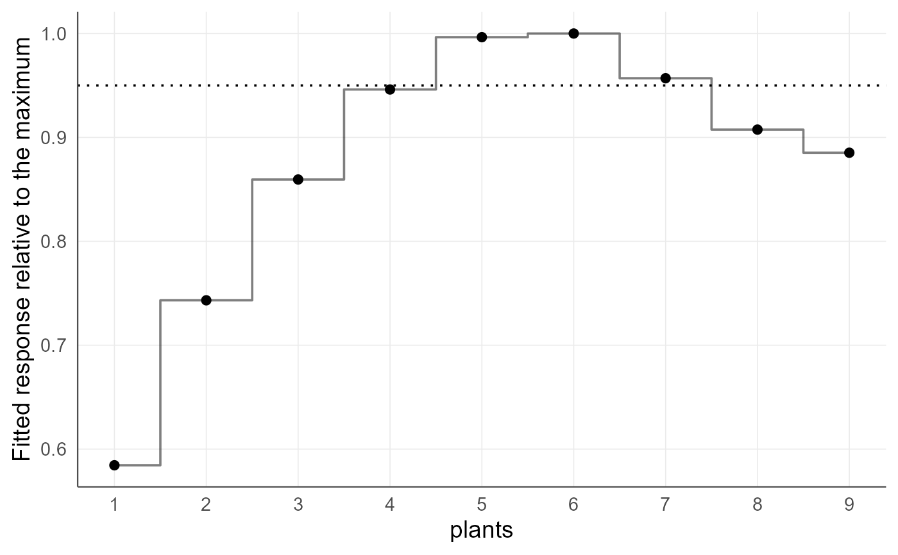
agri_np_plot(fi, type = "difference")
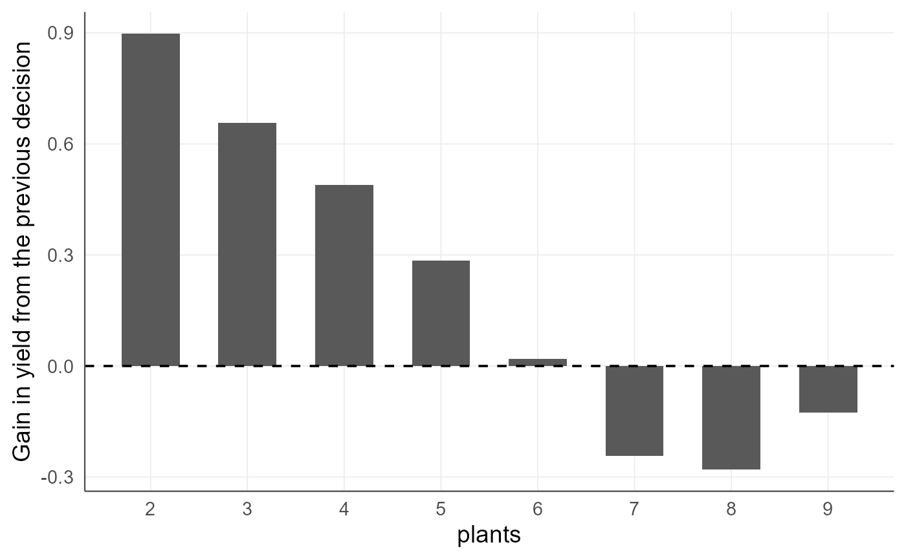
# Example 8: coefficient forest plot for a model with a qualitative factor
if (requireNamespace("quantreg", quietly = TRUE)) {
dz <- agri_dose
dz$cultivar <- factor(rep(c("Ana", "Bela"), length.out = nrow(dz)))
dz$yield <- dz$yield + ifelse(dz$cultivar == "Bela", 0.9, 0)
fq <- agri_np_regression(yield ~ dose + cultivar, dz, method = "quantile")
bt <- agri_np_bootstrap(fq, target = "coefficients", B = 19, seed = 1) # B >= 999 in analysis
agri_np_plot(fq, type = "forest", bootstrap = bt)
}
#> Warning: Solution may be nonunique
#> Warning: Solution may be nonunique
#> Warning: Solution may be nonunique
#> Warning: Solution may be nonunique
#> Warning: Solution may be nonunique
#> Warning: Solution may be nonunique
#> Warning: Solution may be nonunique
#> Warning: Solution may be nonunique
#> Warning: Solution may be nonunique
#> Warning: Solution may be nonunique
#> Warning: Solution may be nonunique
#> Warning: Solution may be nonunique
#> Warning: Solution may be nonunique
#> Warning: Solution may be nonunique
#> Warning: Solution may be nonunique
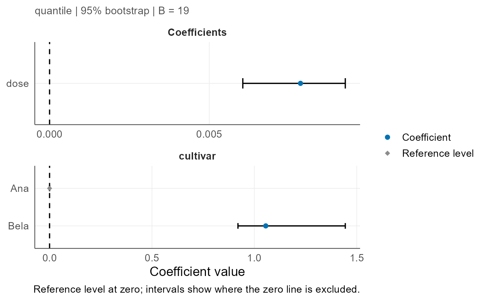
# Example 9: observed values, fitted curve and a bootstrap band. The same
# call serves a model without a qualitative factor...
bfit <- agri_np_bootstrap(f, B = 19, n = 60, seed = 1) # B >= 999 in analysis
agri_np_plot(f, type = "fit", bootstrap = bfit)
# ...and, with a factor, one curve and one band per level.
if (requireNamespace("quantreg", quietly = TRUE)) {
dz <- agri_dose
dz$cultivar <- factor(rep(c("Ana", "Bela"), length.out = nrow(dz)))
dz$yield <- dz$yield + ifelse(dz$cultivar == "Bela", 0.9, 0)
fq <- agri_np_regression(yield ~ dose + cultivar, dz, method = "quantile")
agri_np_plot(fq, type = "fit", predictor = "dose", group = "cultivar",
bootstrap = 19, seed = 1)
# The level-oriented reading of the same model: observed values under the
# fitted response at each level.
agri_np_plot(fq, type = "levels", B = 19, seed = 1)
}
#> Warning: Solution may be nonunique
#> Warning: Solution may be nonunique
#> Warning: Solution may be nonunique
#> Warning: Solution may be nonunique
#> Warning: Solution may be nonunique
#> Warning: Solution may be nonunique
#> Warning: Solution may be nonunique
#> Warning: Solution may be nonunique
#> Warning: Solution may be nonunique
#> Warning: Solution may be nonunique
#> Warning: Solution may be nonunique
#> Warning: Solution may be nonunique
#> Warning: Solution may be nonunique
#> Warning: Solution may be nonunique
#> Warning: Solution may be nonunique
#> Warning: Solution may be nonunique
#> Warning: Solution may be nonunique
#> Warning: Solution may be nonunique
#> Warning: Solution may be nonunique
#> Warning: Solution may be nonunique
#> Warning: Solution may be nonunique
#> Warning: Solution may be nonunique
#> Warning: Solution may be nonunique
#> Warning: Solution may be nonunique
#> Warning: Solution may be nonunique
#> Warning: Solution may be nonunique
#> Warning: Solution may be nonunique
#> Warning: Solution may be nonunique
#> Warning: Solution may be nonunique